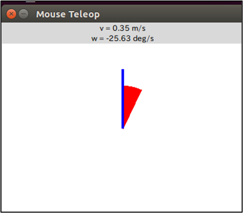

Gazeboモデル(ROS 2 Jazzy)
ライトローバーGazeboモデルについて
ライトローバーGazeboモデルは、Gazebo Harmonicで使用可能なライトローバーのモデルファイルです。
実機と同じサイズで、二輪駆動による走行、LiDARによる障害物検知のシミュレーションを行うことができます。
ライトローバー本体が無くても動作します。
シミュレータは実機と同じトピック(速度指令/rover_twist、LiDAR/scan、オドメトリ/odom)を使用するため、lightrover_ros2(jazzyブランチ)のNav2の設定をそのまま使って自律走行させることができます。
あくまでシミュレーション用のモデルのため、実機と異なる挙動となることもあるかと思いますが、ご了承ください。
Note
ROS 1版(Gazebo Classic)のモデルから、主に以下の点が変更されています。
- Gazebo Harmonic用のプラグイン(
gz_ros2_control、gpu_lidar)に置き換え - 質量を実機相当(合計約0.516kg)に変更(ROS 1版では動作安定化のため質量・重心位置を実機から変えていました)
- 速度制御に
diff_drive_controllerを使用し、/rover_twistで速度指令を受けて/odomを出力 - ワールドファイルをSDF形式に変換(
clearpath_playpen.worldは削除) - SLAMはgmappingからslam_toolboxに、自律走行はmove_baseからNav2に変更
動作確認環境
以下の環境で動作確認を行っています。
| OS | Windows 11 + WSL2 (Ubuntu 24.04) |
| ROS | ROS 2 Jazzy |
| Gazebo | Gazebo Harmonic (gz-sim 8) |
ライトローバーに搭載されているRaspberry Piでは動作確認を行っておりませんのでご注意ください。
GPUの無いPCではLiDARの描画処理が重く、シミュレーションが実時間より遅く進むことがあります。
導入方法
ROS 2 Jazzy(desktop)の導入およびワークスペースの作成は完了しているものとします。
ここでは、ワークスペースのディレクトリ名を「ros2_ws」として記述します。
必須パッケージのインストール
シェルを立ち上げ、次のコマンドで必須パッケージをインストールします。
sudo apt install ros-jazzy-ros-gz ros-jazzy-gz-ros2-control ros-jazzy-ros2-controllers \
ros-jazzy-xacro ros-jazzy-joint-state-publisher-gui \
ros-jazzy-navigation2 ros-jazzy-nav2-bringup ros-jazzy-slam-toolbox \
ros-jazzy-mouse-teleop ros-jazzy-teleop-twist-keyboard
lightrover_descriptionパッケージのインストール
ライトローバーGazeboモデルは、lightrover_descriptionパッケージによって提供されます。
lightrover_descriptionは、lightrover_ros2パッケージ(jazzyブランチ)にサブモジュールとして含まれています。
また、SLAMおよび自律走行にはlightrover_ros2に含まれるlightrover_navigationを使用します。
次のコマンドでワークスペースに移動します。
cd ~/ros2_ws/src
githubからlightrover_ros2のソースコードを、jazzyブランチを指定してクローンします。
lightrover_descriptionも一緒に取得するため、--recursiveオプションを付けてください。
git clone --recursive -b jazzy https://github.com/vstoneofficial/lightrover_ros2.git
Note
lightrover_ros2を既にクローンしている場合は、上記のクローンは不要です。
下記のコマンドで、lightrover_ros2とlightrover_descriptionを最新の状態に更新してください。
(以前にクローンしたlightrover_ros2には、旧バージョン(ROS 2 Humble用)のlightrover_descriptionが含まれています。)
lightrover_ros2をクローン済みの場合のみ実行してください。
cd ~/ros2_ws/src/lightrover_ros2
git pull
git submodule update --init
Warning
lightrover_descriptionを単体で別途クローンしないでください。
lightrover_ros2内のものと同名のパッケージが2つ存在することになり、ビルドエラーとなります。
ビルドしましょう。
cd ~/ros2_ws
colcon build --symlink-install
source install/setup.bash
ビルドエラーが出なければ、lightrover_descriptionのセットアップは完了です。
以降の手順では、新しくシェルを立ち上げるたびに以下のコマンドでワークスペースの環境を読み込んでください。
source ~/ros2_ws/install/setup.bash
使用方法
RVizでのモデル表示確認
シェルを立ち上げ、以下のコマンドを入力してください。
ros2 launch lightrover_description lightrover_view.launch.py
正常に動作した場合、RViz2とjoint_state_publisher_guiが起動し、ライトローバーのモデルが表示されます。
Gazeboシミュレータの立ち上げ
シェルを立ち上げ、以下のコマンドを入力してください。
なお、lightrover_view.launch.pyを起動している場合は予め終了しておいてください。
ros2 launch lightrover_description gazebo.launch.py
Gazeboが立ち上がり、サンプルワールド上にライトローバーが出現します。
この状態で、視点移動やオブジェクトの配置等が可能です。
gazebo.launch.pyでは、以下の引数を指定することができます。
| 引数 | 既定値 | 説明 |
|---|---|---|
| world | lightrover_sample | ワールド名(empty / lightrover_sample / lightrover_sample_2)またはSDFファイルのパス |
| gui | true | Gazeboの画面を表示する |
| rviz | false | RViz2を起動する(モデル・LiDAR・オドメトリを表示) |
| x, y, yaw | 0.0 | ライトローバーの出現位置 |
例えば、ライトローバー以外のオブジェクトが無いワールドで、RViz2も合わせて起動する場合は次のように実行します。
ros2 launch lightrover_description gazebo.launch.py world:=empty rviz:=true
迷路のワールドで起動する場合は次のように実行します。
ros2 launch lightrover_description gazebo.launch.py world:=lightrover_sample_2
world:=にSDFファイルのパスを指定することで、任意のワールドでシミュレータ環境を起動することもできます。
シミュレータは実機と同じ以下のトピックを使用します。
| トピック | 型 | 内容 |
|---|---|---|
| /rover_twist | geometry_msgs/Twist | 速度指令(実機と同じ) |
| /rover_twist_stamped | geometry_msgs/TwistStamped | 速度指令(mouse_teleopなどTwistStampedを出力するツール用) |
| /odom | nav_msgs/Odometry | 車輪オドメトリ(TF odom -> base_footprintも出力) |
| /scan | sensor_msgs/LaserScan | LiDAR(frame: laser_frame、360°、0.1～8.0m、10Hz) |
| /clock | rosgraph_msgs/Clock | シミュレーション時刻 |
シミュレータを起動したら、シミュレータ上のライトローバーを制御するノードを起動していきます。
実機のライトローバーを制御するノードを起動するのと同様にお考え下さい。
マウス（タッチパッド）による操作
マウス（タッチパッド）を用いて速度指令値を出力するmouse_teleopを使用してみましょう。
シミュレータを起動した状態で、新しいシェルで以下のコマンドを実行します。
ros2 launch lightrover_description mouse_teleop.launch.py
しばらく待つと、以下のような画面が表示されます。

画面上でマウスをドラッグすることで、ライトローバーを走行させることができます。ボタンを離すと停止します。
上下のドラッグで前進・後退、左右のドラッグで旋回します。
scale:=0.2のように引数を指定すると、ウィンドウの端までドラッグしたときの速度(m/s、rad/s)を変更できます(既定値は0.3)。
ros2 launch lightrover_description mouse_teleop.launch.py scale:=0.2
キーボードによる操作
キーボードで操作する場合は、新しいシェルで以下のコマンドを実行します。
ros2 run teleop_twist_keyboard teleop_twist_keyboard --ros-args -r cmd_vel:=rover_twist
表示される説明に従ってキーを押すと、ライトローバーが走行します。
ゲームパッドによる操作
PCに接続したゲームパッドを用いて速度指令値を出力してみましょう。
ゲームパッドで走行しようのページを参考に、必要パッケージのインストールとデバイスファイルパスの確認を行ってください。
シミュレータでは実機用のノード(i2c_controller等)は不要なため、pos_joycon.launch.pyではなく、ゲームパッドの入力ノードのみを起動するjoy_input.launch.pyを使用します。
確認したデバイスファイルパスを、以下のコマンドでlaunchファイルを開いて記述してください。
gedit ~/ros2_ws/src/lightrover_ros2/lightrover_ros/launch/joy_input.launch.py
書き換えたら再度ビルドを行います。
cd ~/ros2_ws
colcon build --symlink-install
source install/setup.bash
一通りの設定が完了したら、シミュレータを起動した状態で、新しいシェルで以下のコマンドを実行します。
ros2 launch lightrover_ros joy_input.launch.py
コントローラーを操作し、Gazeboの中でライトローバーが走行することを確認してください。
Note
WSL上で使用する場合、USB接続したゲームパッドはそのままではWSLから認識されません。
usbipd-win等を用いてUSBデバイスをWSLに接続する必要があります。
SLAM(slam_toolbox)
シミュレーション環境で地図を作ってみましょう。
SLAMをしようと同様に、slam_toolboxを使用します。
Gazeboが起動している場合は一度終了し、以下のコマンドでシミュレータとslam_toolboxを起動します。
ros2 launch lightrover_description gazebo_slam.launch.py
迷路のワールドで地図を作る場合はworld:=lightrover_sample_2を指定してください。
新たなシェルでmouse_teleop.launch.py、キーボード操作またはjoy_input.launch.pyを起動してライトローバーを走行させ、地図を作成していきましょう。
シミュレータ用のslam_toolboxの設定はconfig/slam_toolbox_sim.yamlです。
lightrover_navigationの実機用の設定を元に、地図の更新頻度を上げています。
| 項目 | 実機設定 | シミュレータ設定 |
|---|---|---|
| minimum_travel_distance | 1.0 m | 0.1 m |
| minimum_travel_heading | 1.0 rad (約57°) | 0.1 rad (約6°) |
| max_laser_range | 30.0 m | 8.0 m |
slam_toolboxは、ロボットがこの距離または角度だけ動くまで新しいスキャンを地図に反映しません。
実機と同じ設定で試す場合は、次のように指定してください。
ros2 launch lightrover_description gazebo_slam.launch.py \
slam_params_file:=$(ros2 pkg prefix lightrover_navigation)/share/lightrover_navigation/config/mapper_params_online_async.yaml
地図が完成したら、さらに新しいシェルで以下のコマンドを実行して保存します。
ここではホームディレクトリに「lightrover_map」という名前で保存しています。ファイル名は適宜変更してください。
ros2 run nav2_map_server map_saver_cli -f ~/lightrover_map --ros-args -p use_sim_time:=true
自律走行(Nav2)
シミュレータ上のライトローバーをNav2で自律走行させてみましょう。
lightrover_ros2(jazzyブランチ)のlightrover_navigationを、シミュレータ用の設定(use_sim_time:=true、実機用ノードなし)で起動します。
Gazeboが起動している場合は一度終了し、以下のコマンドを実行します。
ros2 launch lightrover_description gazebo_nav.launch.py
迷路のワールドで試す場合は以下のコマンドを実行します。
ros2 launch lightrover_description gazebo_nav.launch.py world:=lightrover_sample_2
ワールドに対応した地図(lightrover_descriptionのmaps/に同梱)と初期位置は自動で設定されます。
RViz2が起動したら、自律走行させようと同様に、RViz2上部の「Nav2 Goal」でゴールを指定するとライトローバーが走行します。
SLAMで作成した地図を使用する場合は、map:=で地図ファイル(.yaml)を指定してください。
ros2 launch lightrover_description gazebo_nav.launch.py map:=$HOME/lightrover_map.yaml
別のNav2パラメータファイルを使用する場合はparams_file:=で指定します。
なお、既定ではNav2のパラメータとしてlightrover_navigationにある実機用のパラメータ(config/nav2_params.yaml)を使用しています。
シミュレータ用に行ったパラメータの変更は実機の挙動にも反映されるのでご注意ください。
同梱の地図は、ワールドのSDFファイルからworld_to_map.pyで生成したものです。
ワールドを変更した場合は、次のコマンドで地図を作り直すことができます。
ros2 run lightrover_description world_to_map.py <ワールドのSDFファイル> <出力先/ファイル名>